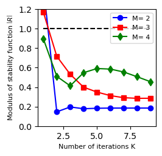
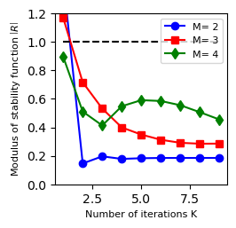
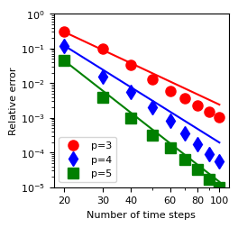
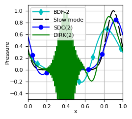

Fast-Wave-Slow-Wave SDC¶
In this project, we explore semi-implicit spectral deferred corrections (SISDC) in which the stiff, fast dynamics correspond to fast propagating waves. We study the performance of the method compared to standard integrators like RK-IMEX or DIRK schemes and analyze the convergence properties for scalar test problems. This project contains the code for the publication Spectral deferred corrections with fast-wave-slow-wave splitting of pySDC v2, while the original code can be found under The fast-wave-slow-wave release, v2. Note that due to the long runtime, not all results are generated via CI. For the Boussinesq example and the convergence test of the acoustic-advection equation, only the visualization (and therefore the existence of the data files) is tested. We omit the codes in this documentation, since they are rather long and slightly complex.
Theoretical results¶
Here, we review FWSW-SDC from two different viewpoints: as a split method with a fixed order set by a fixed number of iterations K for a sufficiently large number of nodes M, or as an iterative solver for the collocation problem where iterations are performed until the norm of the residual reaches a prescribed tolerance. We investigate fwsw-SDC from both viewpoints for the scalar test problem and analyze:
the spectral radius of the iteration matrix (Fig. 1 in the above mentioned publication)
the stability domains of different configurations (Fig. 2)
stability with respect to the iteration number k (Fig. 3)
the dispersion relation (Fig. 4)
Results:

{kind=link}
 

{kind=link}


{kind=link}
Acoustic-advection example¶
In a first more complex example, we consider the 1D acoustic-advection example. We show:
convergence of FWSW-SDC with orders 3, 4, and 5 versus number of time steps (Fig. 5, left)
convergence rate of the FWSW-SDC iteration (Fig. 5, right)
the numerical solution of the acoustic-advection equation with multiscale initial data (Fig. 6)
Results:
 {kind=link}
{kind=link}
{kind=link}
Boussinesq example¶
In a second, even more complex example, we test FWSW-SDC for the 2D Boussinesq equation. In particular, we are interested in the number of GMRES iterations each time integrator needs to achieve a certain error.
Results (generated with plotgmrescounter_boussinesq.py):